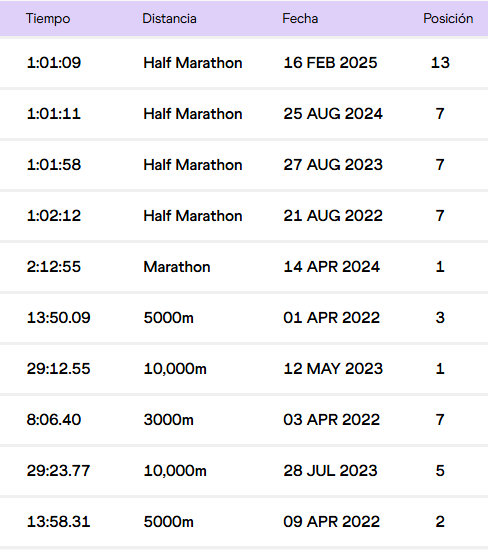
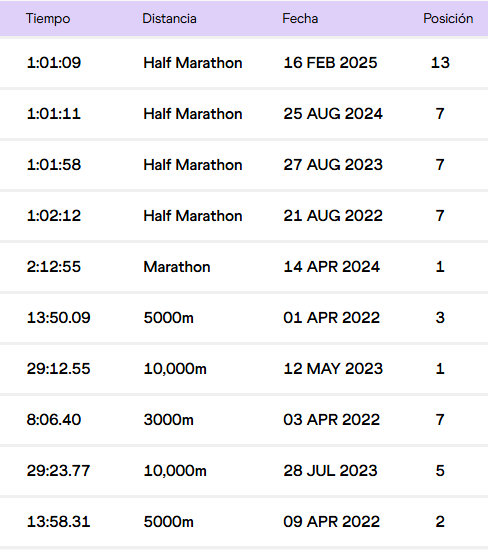
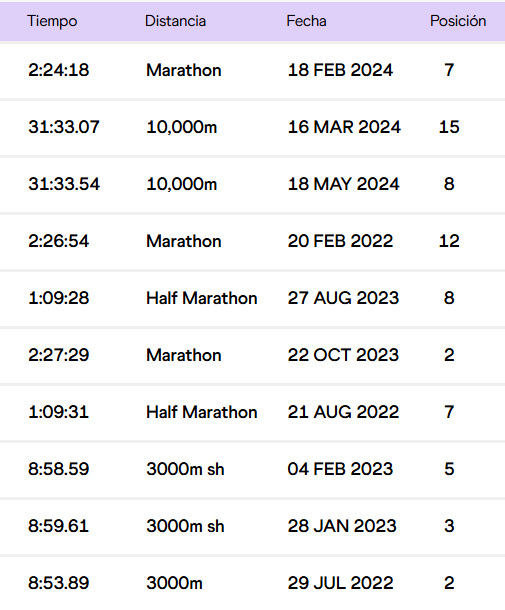
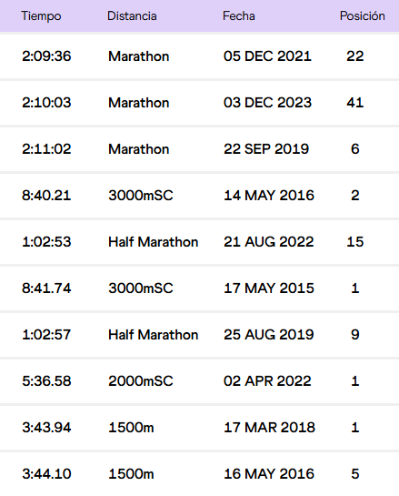

Ignacio Erario
"Nacho" Erario es un fondista argentino nacido en la provincia de Mendoza. Tiene 29 años y su distancia favorita son los 21 km.
Sus mejores tiempos (oficiales):
"Nacho" Erario es un fondista argentino nacido en la provincia de Mendoza. Tiene 29 años y su distancia favorita son los 21 km.
Sus mejores tiempos (oficiales):
Florencia Borelli es una corredora argentina de medio y fondo. Actualmente tiene 32 años y nació en la ciudad de Mar del Plata.
Sus mejores tiempos (oficiales):
Joaquín Arbe es un corredor Argentino y participó en los Juegos Olímpicos del 2020 en Tokio, Japón.
Sus mejores tiempos (oficiales):
